library(tidyverse)
library(flextable)
library(ggpubr)
#library(kableExtra)2 ggplot basics
Sources:
- ggplot2 guidance
- R for data science
- Plotting anything with ggplot2 - video guide
- R graphics cookbook
- Bar plots
2.0.1 Introduction
ggplot2 is a system for creating graphics, based on The Grammar of Graphics. You provide data, tell ggplot2 how to map variables to aesthetics, what graphical primitives to use, and it takes care of the details.
“The simple graph has brought more information to the data analyst’s mind than any other device.” — John Tukey
2.0.2 Topics:
- the grammar of graphics,
- creating a scatter plot encoding two, then three, variables,
- learn about faceting, stratifying a basic plot by a third variable.
2.0.2.1 Load some pacakges
2.0.2.2 Load the mpg dataset
data(mpg)Every row in mpg is a car, every column a feature of that car. mpg stands for miles per gallon.
head(mpg)# A tibble: 6 × 11
manufacturer model displ year cyl trans drv cty hwy fl class
<chr> <chr> <dbl> <int> <int> <chr> <chr> <int> <int> <chr> <chr>
1 audi a4 1.8 1999 4 auto(l5) f 18 29 p compa…
2 audi a4 1.8 1999 4 manual(m5) f 21 29 p compa…
3 audi a4 2 2008 4 manual(m6) f 20 31 p compa…
4 audi a4 2 2008 4 auto(av) f 21 30 p compa…
5 audi a4 2.8 1999 6 auto(l5) f 16 26 p compa…
6 audi a4 2.8 1999 6 manual(m5) f 18 26 p compa…R’s most basic plotting command: plot()
plot(mpg$displ, mpg$hwy)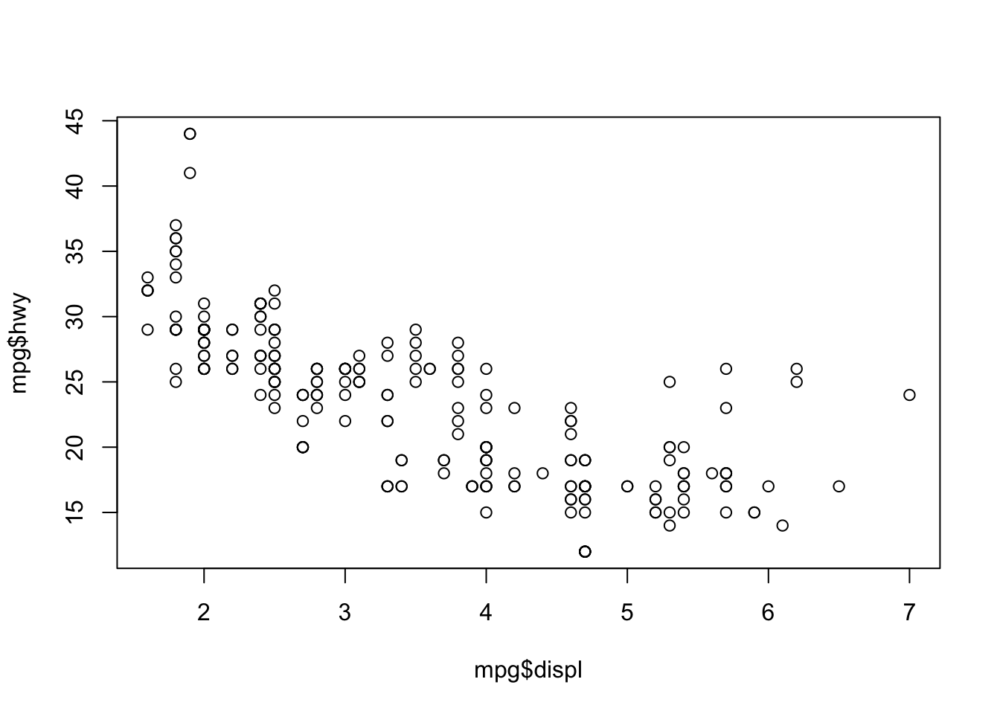
This is base R:
- Pros: simplicity,
- Cons: not that pretty, more complex things are not possible.
Whereas, ggplot2 is:
- less intuitive, harder to start with,
- easier to make sophisticated and beautiful plots.
2.1 The structure of statistical graphics
A mapping of data variables to aesthetic attributes of geometric objects.
All ggplot2 graphs have these three elements:
- a data set (data),
- a geometry (geom),
- an aesthetic mapping (aes).
The data element is intuitive to me. It is whatever data you feed into the command, where to look for the variables.
What is a geometric object? In the simple base R graph above, it is a point. It could be a line, a polygon…
What are the aesthetic attributes of a point? In the base R graph, we have an x co-ordinate, and a y co-ordinate. To construct a plot, we tell the software where to find those two co-ordinates, and therefore where to locate the point. So the aesthetic attributes tell you how to go from the dataset to identify the aesthetic qualities of the graph.
James Scott describes these features as adding layers to a plot, each one is a layer, linked by a + symbol.
2.1.1 The grammar of graphics

2.1.2 An example
This creates a ggplot. The first ‘layer’ tells ggplot to look at the mpg data, the second layer makes an “aesthetic mapping” (aes) by:
- linking the variable
displwith the aesthetic property x (horizontal location), - and linking the variable hwy with the aesthetic property y (vertical location).
It then displays the data in a scatter plot, the chosen geometry (geom_point).
Some people think this graph looks nicer than base R’s graph, but there is more to it than that.
ggplot(data=mpg) +
geom_point(mapping = aes(x = displ, y = hwy))
2.2 Adding layers to a graph
ggplot2 allows more aesthetic mappings to be added, with more than 2 variables.
2.2.1 Point colour
Here the colour option is varied by the class of vehicle.
ggplot(data=mpg) +
geom_point(mapping=aes(x=displ, y=hwy, colour=class))
We can also vary colour using a numeric variable, where it produces a fade effect.
ggplot(data=mpg) +
geom_point(mapping=aes(x=displ, y=hwy, colour=displ))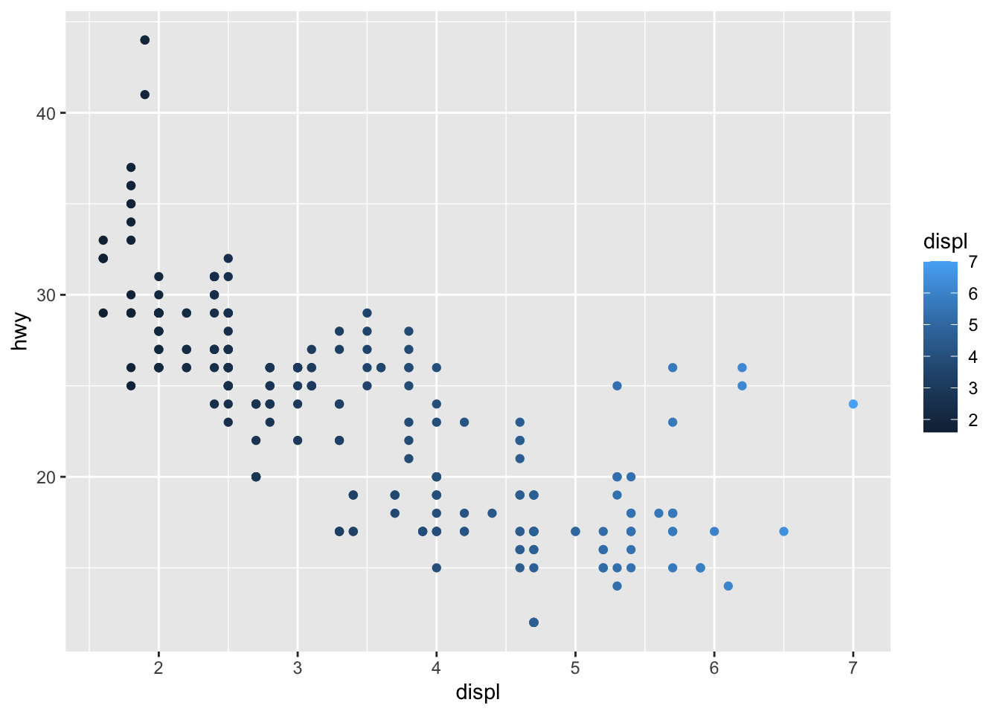
2.2.2 Fill
Fill performs a similar function to colour.
However, with geom_point to be able to use fill we need to select a point ‘shape’ that allows it.
For geom_point, one usable shape 21 (possible ones are 21-25).
When shape = 21 there is a space inside the point to be filled. Without it, the fill argument has no effect.
ggarrange(
ggplot(data=mpg) +
geom_point(mapping=aes(x=displ, y=hwy, colour = drv), fill="white", shape=21, size=3.5),
ggplot(data=mpg) +
geom_point(mapping=aes(x=displ, y=hwy, colour = drv), fill="white")
)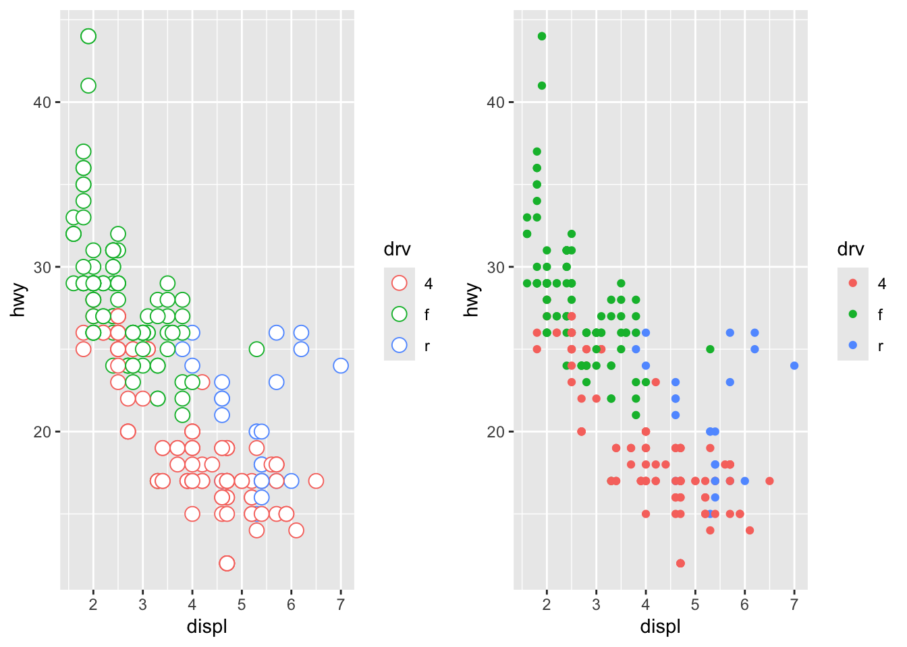
With other geoms fill works automatically, as with geom_histogram below.
ggplot(data=mpg) +
geom_histogram(mapping=aes(y=hwy, fill = drv)) +
coord_flip()`stat_bin()` using `bins = 30`. Pick better value `binwidth`.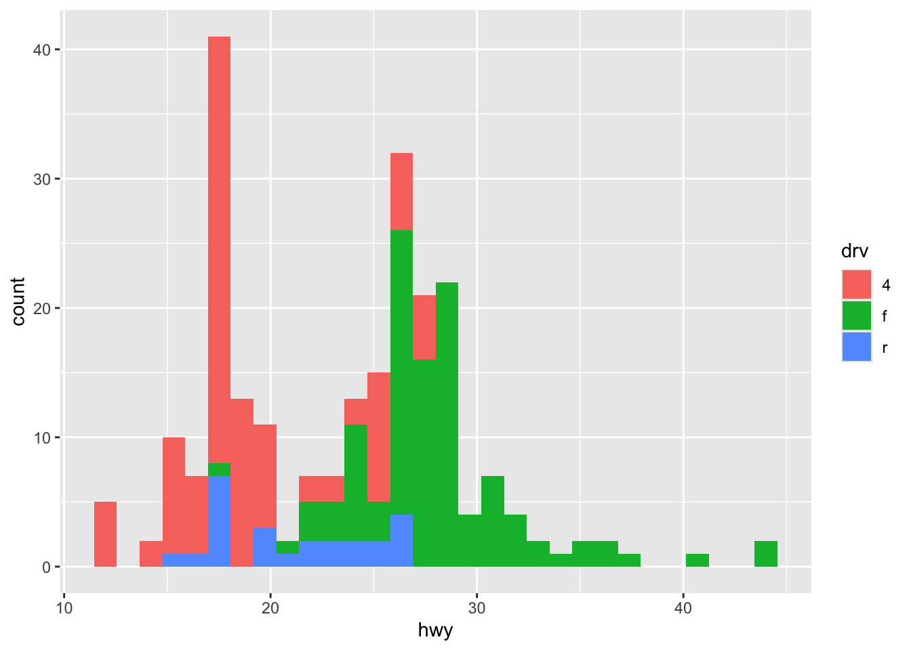
2.2.3 Point size
You can also edit other properties of graphs, for example, point size. Although that makes limited sense in this case.
R gives a warning here, because categorical variables are not best reflected by point size.
ggplot(data=mpg) +
geom_point(mapping=aes(x=displ, y=hwy, size=class))
## Warning: Using size for a discrete variable is not advised.
Instead, a numeric variable would make more sense.
ggplot(data = mpg) +
geom_point(mapping = aes(x = displ, y = hwy, size = displ, colour=displ))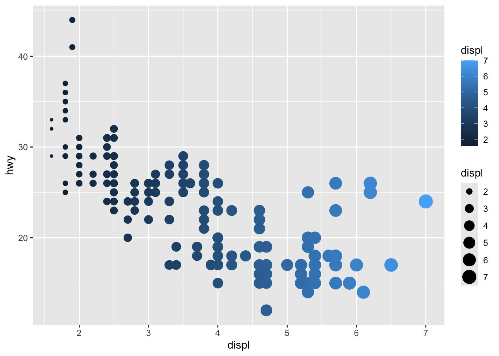
2.2.4 Point transparency
We could also vary the point by transparency:
ggplot(data=mpg) +
geom_point(mapping=aes(x=displ, y=hwy, alpha=class))
## Warning: Using alpha for a discrete variable is not advised.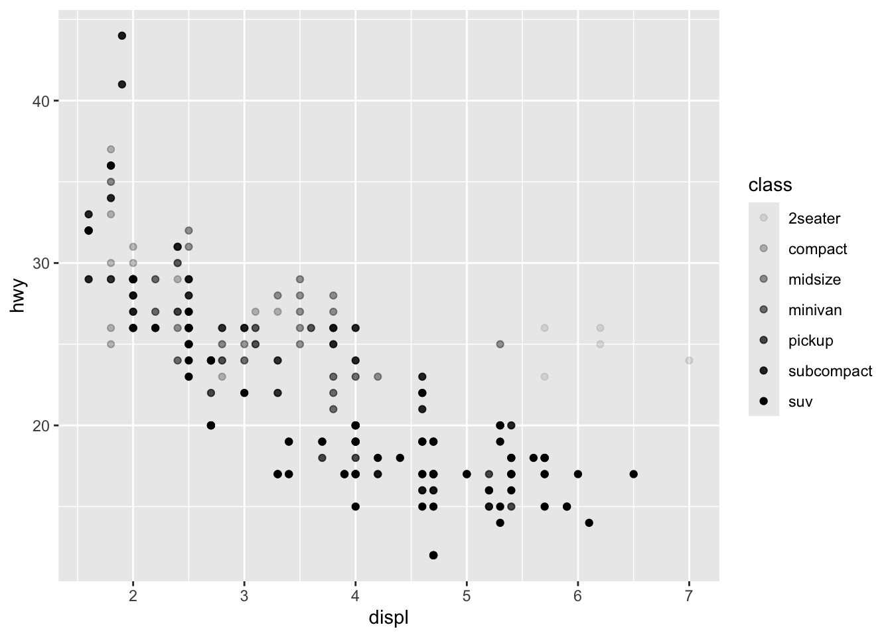
2.2.5 Point shape
You can also vary point shape. ( )
)
ggplot(data=mpg) +
geom_point(mapping=aes(x=displ, y=hwy, shape=class))
## Warning: The shape palette can deal with a maximum of 6 discrete values because more
## than 6 becomes difficult to discriminate
## ℹ you have requested 7 values. Consider specifying shapes manually if you need
## that many of them.
## Warning: Removed 62 rows containing missing values or values outside the scale range
## (`geom_point()`).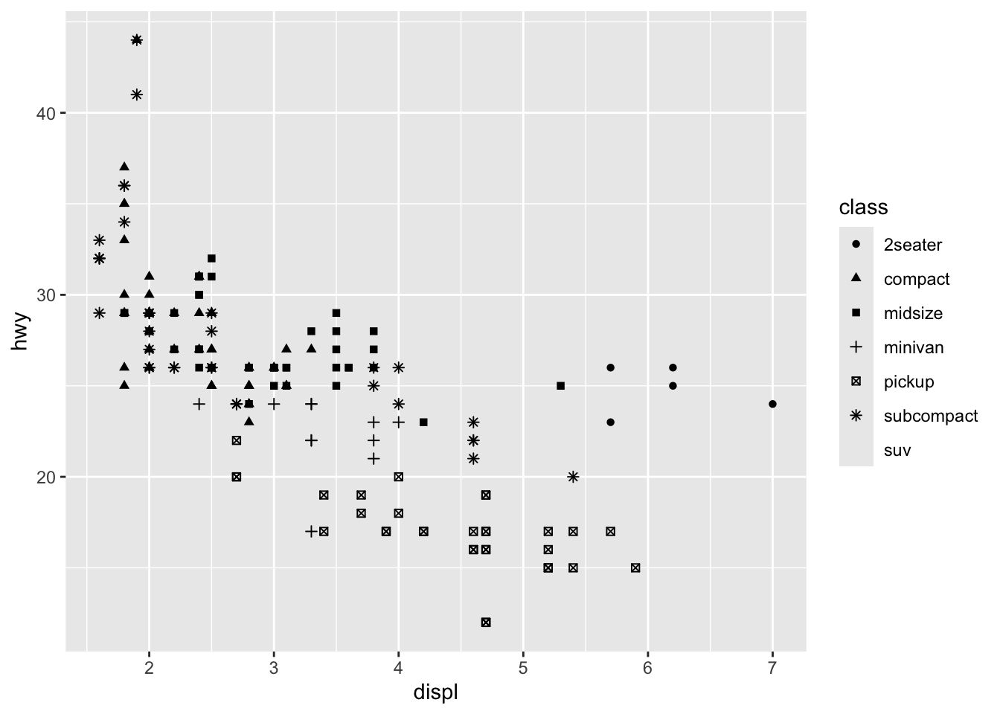
2.2.6 Shape outline
Stroke controls the width of the border of a shape. It’s only suitable for shapes which have a border.
Shape is set to 21 so that the border can be distinguished from the fill colour.
ggplot(data=mpg) +
geom_point(mapping=aes(x=displ, y=hwy, stroke=2), shape = 21)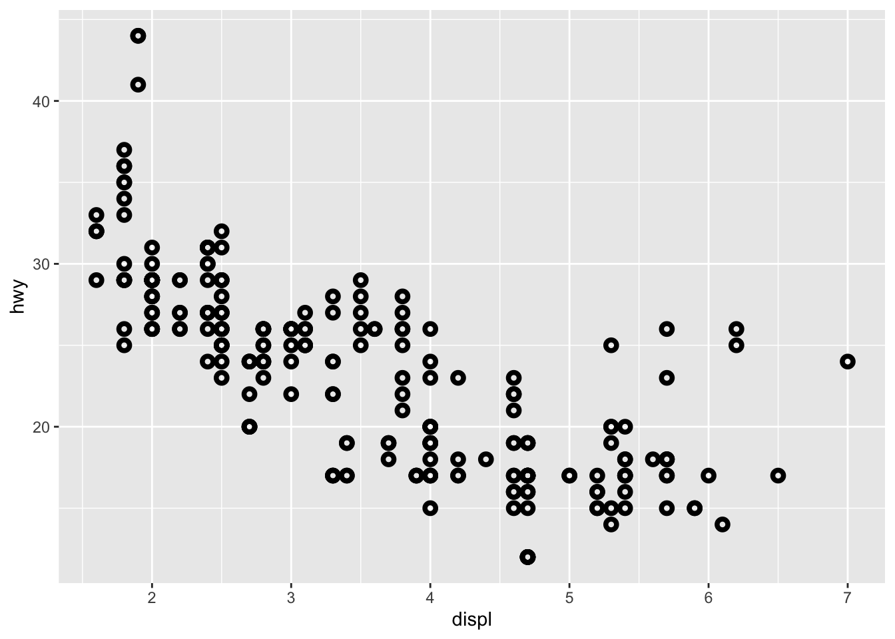
When applied to a line chart we get the warning below, indicating stroke is ignored.
ggplot(data=mpg) +
geom_smooth(mapping=aes(x=displ, y=hwy, stroke=2))
## Warning in geom_smooth(mapping = aes(x = displ, y = hwy, stroke = 2)): Ignoring
## unknown aesthetics: stroke
## `geom_smooth()` using method = 'loess' and formula = 'y ~ x'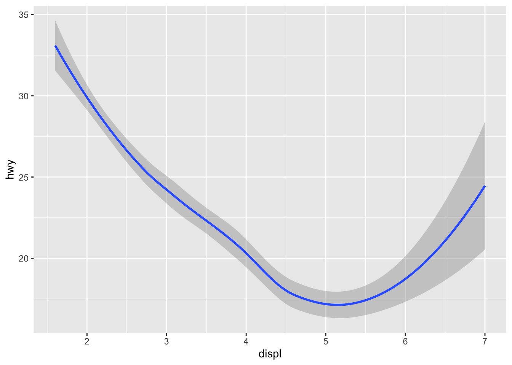
2.2.7 Combining layers
Multiple characteristics can also be applied in the same plot. Here the displ variable controls both the size and colour of the points (also shown, but not explained, above).
ggplot(data = mpg) +
geom_point(mapping = aes(x = displ, y = hwy, size = displ, colour=displ))
You can get quite nuanced with this. In the code below:
- colour sets the border of the shape to white.
- colour is visible only because shape equals 21, with other values of shape it would not be visible.
- size controls point size.
- fill, with aes(), fills the points with colours linked to the
drvvariable, again visible only because shape = 21.
ggplot(data = mpg, mapping = aes(x = displ, y = hwy)) +
geom_point(mapping = aes(fill = drv), shape=21, colour="white", size=3, stroke=2)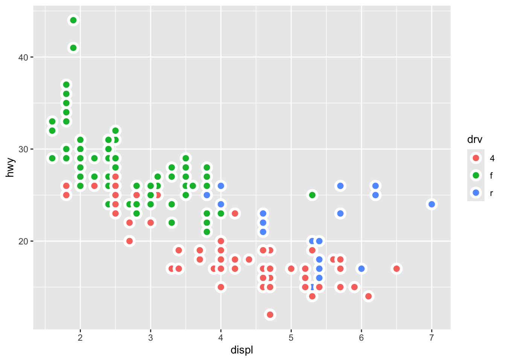
2.2.8 Transforming numeric to logical variables
Here ‘displ < 5’ is a logical - TRUE/FALSE - statement. The TRUE cases are one colour, the FALSE are another.
ggplot(data = mpg) +
geom_point(mapping = aes(x = displ, y = hwy, colour = displ < 5))
2.2.9 Adding data labels
Rather surprisingly font size has a dramatic effect. Size 11 is huge.
Also an issue around how to intelligently extend the plot margins to contain the data labels when outside the bars. How far they should extend depends on the plot size, which differs depending on faceting and similar.
chart <- mpg %>%
group_by(drv) %>%
summarise(hwy = mean(hwy, na.rm = TRUE)) %>%
ggplot(aes(x = drv, y = hwy)) +
geom_col()
chart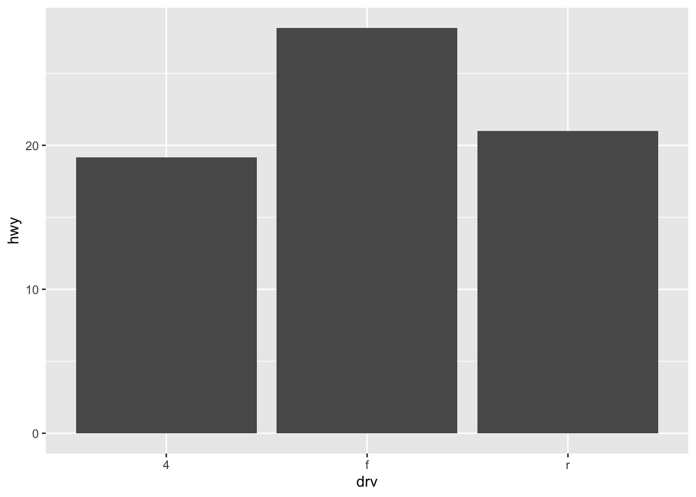
chart2 <- chart + geom_text(aes(label = hwy))
chart3 <- chart + geom_text(aes(label = round(hwy), vjust = -1)) +
coord_cartesian(ylim = c(0, 35))
chart4 <- chart + geom_text(aes(label = round(hwy,1)), vjust = 2, size = 11, color = "white", size.unit = "pt") +
theme(legend.position = "none")
ggarrange(chart, chart2, chart3, chart4, ncol = 2, nrow = 2)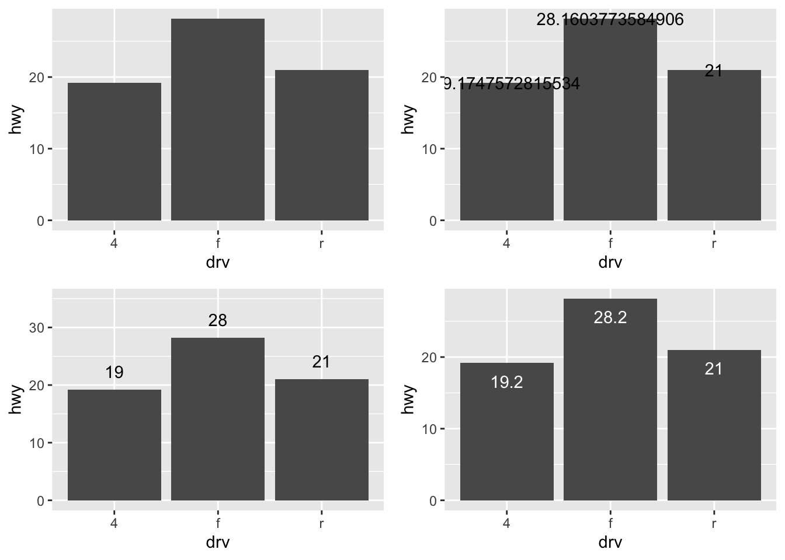
Note the font size of bars cannot be set within theme using text = element_text (more on this below).
One tricky thing is that this size is in mm while the size of element_text() is in pt.
If you want to match geom_text()’s font size to the theme’s size, specify size.unit = “pt” in geom_text()
ggarrange(
chart + geom_text(aes(label = round(hwy)), vjust = -1, size = 11) +
coord_cartesian(ylim = c(0, 35)) +
theme(text = element_text(size = 11)),
chart + geom_text(aes(label = round(hwy)), vjust = -1, size = 11, size.unit = "pt") +
coord_cartesian(ylim = c(0, 35)) +
theme(text = element_text(size = 11)),
nrow = 2)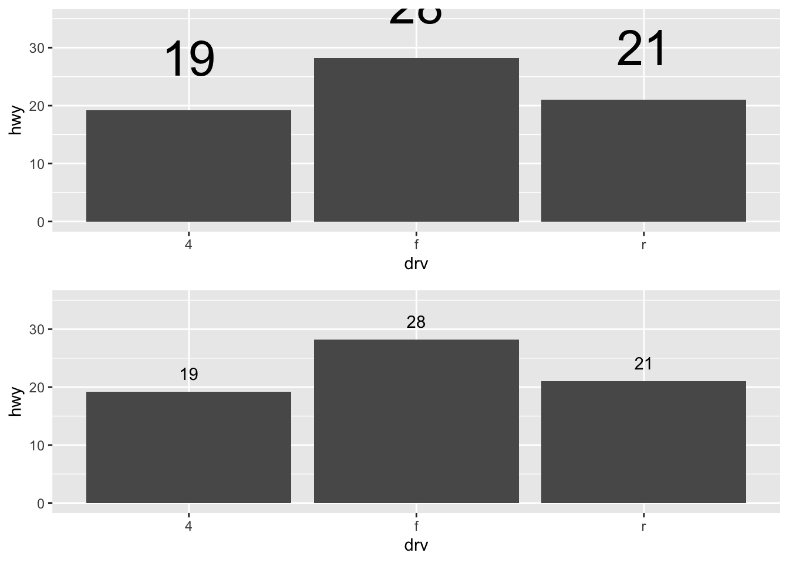
2.3 Adding facets
Stratifying a plot is done with the facet_wrap commands, it runs a separate graph for each sub-group.
The facet layer is considered a ‘third’ layer to the graph. The geometry and aesthetic mapping above are actually part of one layer.
ggplot(data=mpg) +
geom_point(mapping=aes(x=displ, y=hwy)) +
facet_wrap(~ class, nrow=2)
# The nrow specifies display results over two rows. Switching to control number of columns…
ggplot(data=mpg) +
geom_point(mapping=aes(x=displ, y=hwy)) +
facet_wrap(~ class, ncol=2)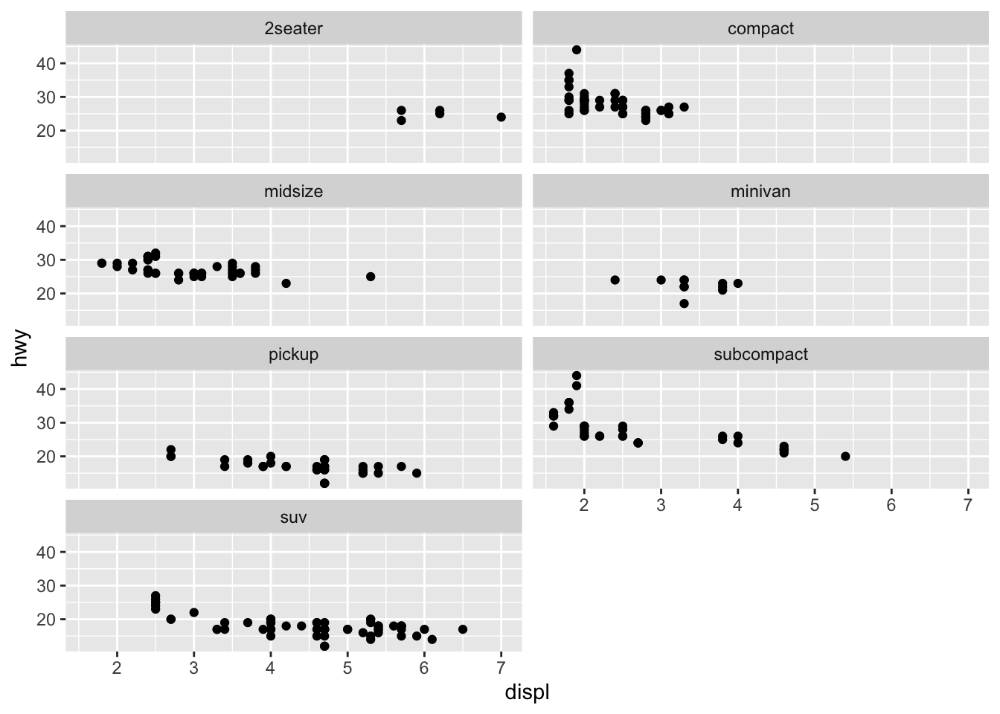
If the number of row and columns is specified and does not allow enough panels, you will get an error.
ggplot(data=mpg) +
geom_point(mapping=aes(x=displ, y=hwy)) +
facet_wrap(~ class, ncol=2, nrow=2)
## Error in `wrap_dims()`:
## ! Need 7 panels, but together `nrow` and `ncol` only provide 4.
## ℹ Please increase `ncol` and/or `nrow`.2.3.0.1 Using a continuous variable as a facet argument
Does not work so well.
ggplot(data = mpg) +
geom_point(mapping = aes(x = displ, y = hwy)) +
facet_wrap(~ displ)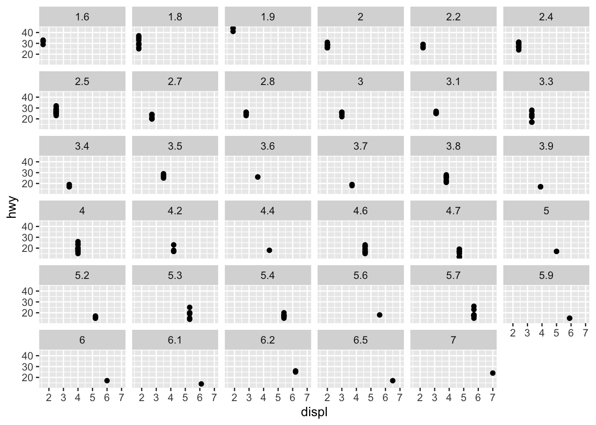
2.3.1 Using a grid display
You can also divide your data by a combination of two variables, but frankly this is confusing.
ggplot(data = mpg) +
geom_point(mapping = aes(x = displ, y = hwy)) +
facet_grid(drv ~ cyl)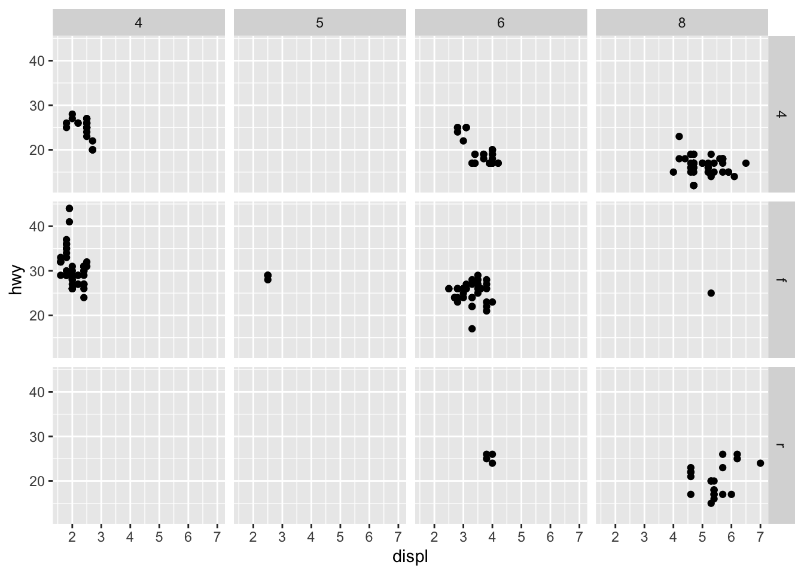
2.3.1.1 Switch to a horizontal split for facet_grid
As standard, grids are split along one row with multiple columns.
ggplot(data = mpg) +
geom_point(mapping = aes(x = displ, y = hwy)) +
facet_grid(~drv)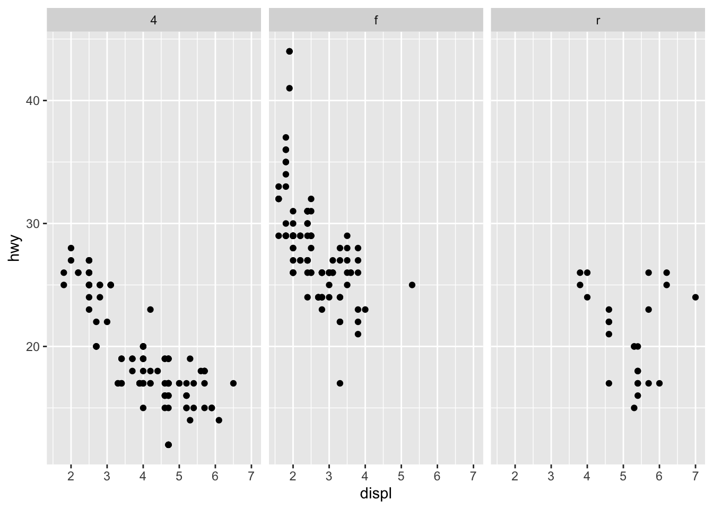
Add ~. to present this with one column and multiple rows.
ggplot(data = mpg) +
geom_point(mapping = aes(x = displ, y = hwy)) +
facet_grid(drv ~ .)
2.3.2 Adding further layers
Additional layers can be added after this.
Here, labels.
ggplot(data=mpg) +
geom_point(mapping=aes(x=displ, y=hwy)) +
facet_wrap(~ class, nrow=2) +
labs(
title="Fuel efficiency generally decreases with engine size",
caption="Data from fueleconomy.gov",
x="Engine displacement (litres)",
y="Highway gas mileage (mpg)"
)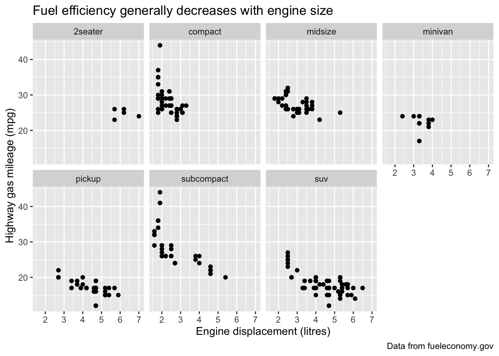
2.4 Saving plots as an object
This saves your basic plot as an object, and you can now experiment with adding more layers to it, and see what you like best.
pl <- ggplot(data=mpg) +
geom_point(mapping=aes(x=displ, y=hwy))Here we try adding a facet_wrap using class, with one row of panels.
pl + facet_wrap(~class, nrow=1)
If we don’t like that, try it with two.
pl + facet_wrap(~class, nrow=2)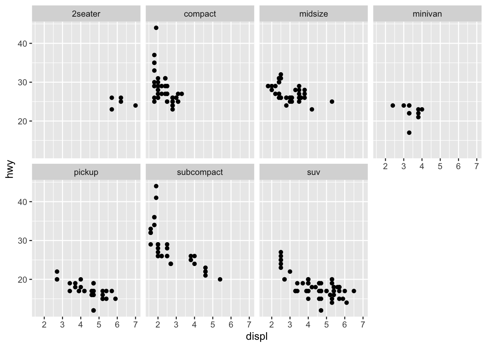
2.5 Manually changing plot characteristics
You can also manually change an aesthetic property by putting it outside the aes() command.
Here we simply make all the points blue.
ggplot(data=mpg) +
geom_point(mapping = aes(x=displ, y=hwy), colour="blue")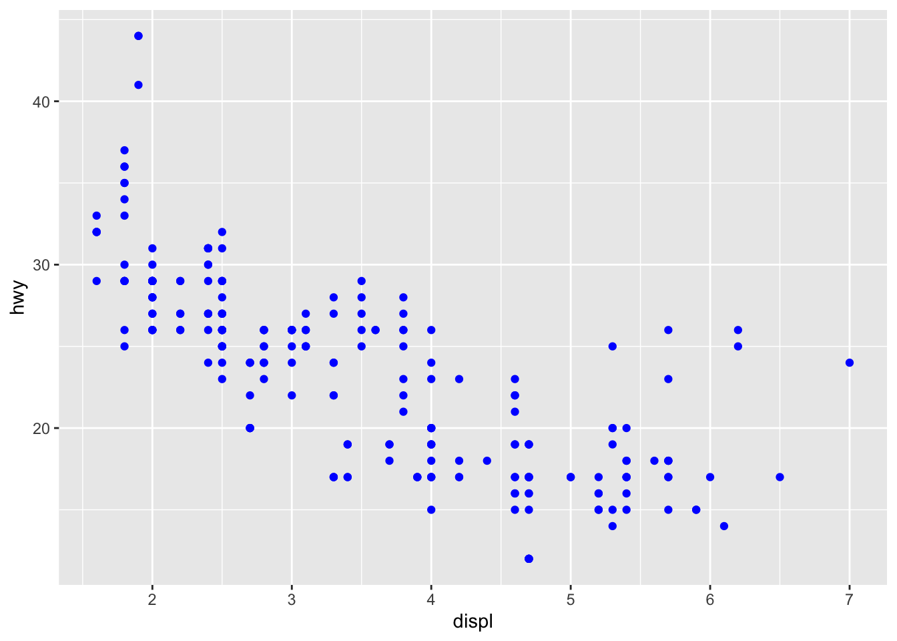
Here colour needs to be specified outside of the aes() argument, otherwise it has no effect. There is no error warning helpfully.
ggplot(data = mpg) +
geom_point(mapping = aes(x = displ, y = hwy, color = "blue"))
Or we can choose the shapes…
ggplot(data=mpg) +
geom_point(mapping = aes(x=displ, y=hwy), shape=8)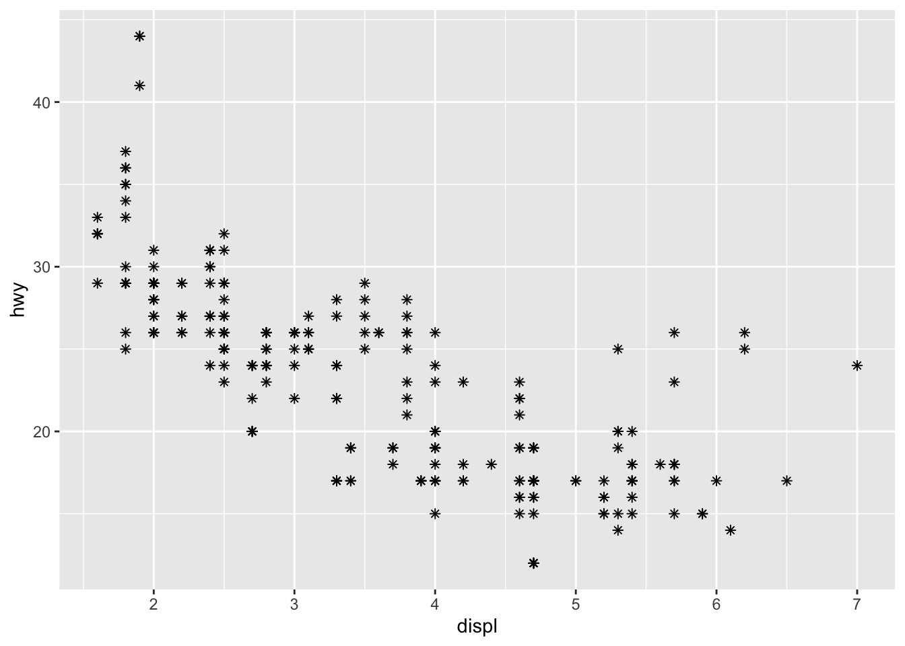
2.6 Using aes() on its own layer
The aes() step can form its own layer, separate to the geom_point() one.
With only the aes() step specified we have associated the x axis with displ and the y axis with hwy, but no graph is shown. geom_point() specifies the graph to be shown.
ggplot(data=mpg) + aes(x=displ, y=hwy)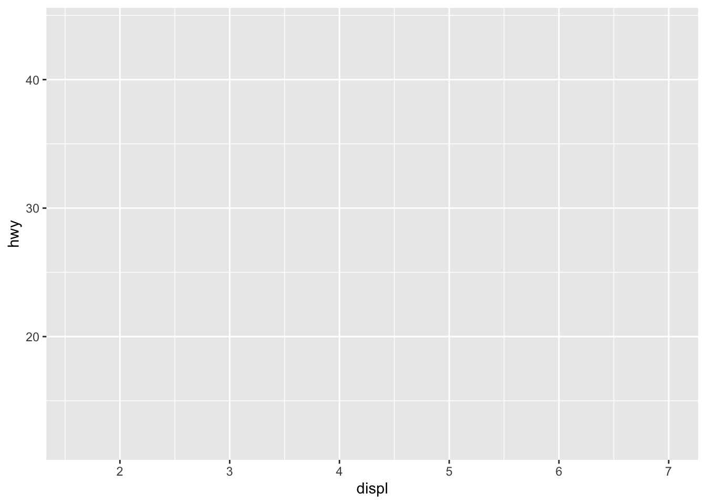
Adding the graph type:
ggplot(data=mpg) + aes(x=displ, y=hwy) + geom_point()
This seems largely useless, but it does illustrate the differences between these steps, and possibly you could create an empty plot, with axis specified, and then feed that into different geom_point() steps. Not sure that’s really useful though.
2.7 What is a geom?
To answer this, look at the two charts below and consider - how are they similar?
Both plots contain the same x variable, the same y variable, and both describe the same data. But the plots are not identical. Each plot uses a different visual object to represent the data. In ggplot2 syntax, we say that they use different geoms.
A geom is the geometrical object that a plot uses to represent data.
People often describe plots by the type of geom that the plot uses. For example, bar charts use bar geoms, line charts use line geoms, boxplots use boxplot geoms, and so on. Scatterplots break the trend; they use the point geom.
As we see below, you can use different geoms to plot the same data. The plot on the left uses the point geom, and the plot on the right uses the smooth geom, a smooth line fitted to the data.
ggarrange(
ggplot(data = mpg) + geom_point(mapping = aes(x = displ, y = hwy)),
ggplot(data = mpg) + geom_smooth(mapping = aes(x = displ, y = hwy))
)
## `geom_smooth()` using method = 'loess' and formula = 'y ~ x'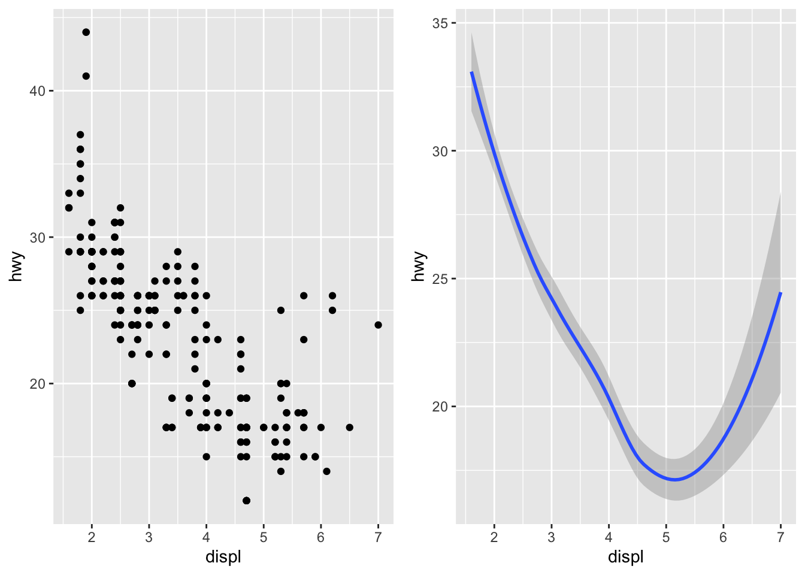
Every geom function in ggplot2 takes a mapping argument. However, not every aesthetic works with every geom.
You could set the shape of a point, but you couldn’t set the “shape” of a line. On the other hand, you could set the linetype of a line. geom_smooth() will draw a different line, with a different linetype, for each unique value of the variable that you map to linetype.
Here geom_smooth() separates the cars into three lines based on their drv value, which describes a car’s drivetrain. One line describes all of the points with a 4 value, one line describes all of the points with an f value, and one line describes all of the points with an r value. Here, 4 stands for four-wheel drive, f for front-wheel drive, and r for rear-wheel drive.
ggplot(data = mpg) +
geom_smooth(mapping = aes(x = displ, y = hwy, linetype = drv))`geom_smooth()` using method = 'loess' and formula = 'y ~ x'
2.8 Putting multiple geoms in a plot
If the above sounds strange, we can make it more clear by overlaying the lines on top of the raw data and then coloring everything according to drv.
To display multiple geoms in the same plot, add multiple geom functions to ggplot().
In this plot we pass the mapping function to ggplot at the same time as the data command. ggplot2 will treat these mappings as global mappings that apply to each geom in the graph.
ggplot(data = mpg, mapping = aes(x = displ, y = hwy, linetype = drv, colour=drv)) +
geom_smooth() +
geom_point()
## `geom_smooth()` using method = 'loess' and formula = 'y ~ x'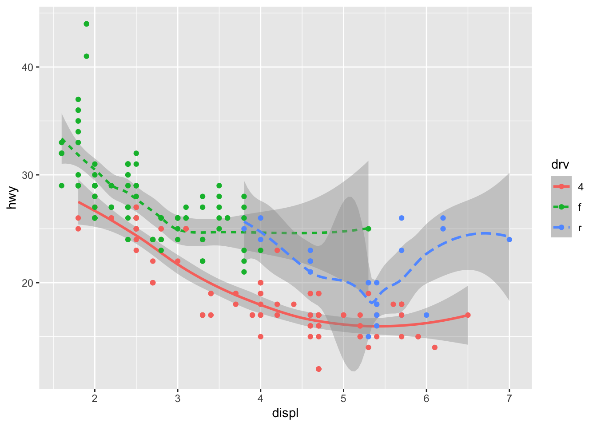
Alternatively, you can achieve the same by specifying the aesthetic arguments for each geom separately.
ggplot(data = mpg) +
geom_point(mapping = aes(x = displ, y = hwy, colour=drv)) +
geom_smooth(mapping = aes(x = displ, y = hwy, linetype = drv, colour=drv))
## `geom_smooth()` using method = 'loess' and formula = 'y ~ x'
However, the code above introduces some duplication in our code.
Imagine if you wanted to change the y-axis to display cty instead of hwy. You’d need to change the variable in two places, and you might forget to update one. You can avoid this type of repetition by passing a set of mappings to ggplot() (as in the first chart above).
Whereas, if you place mappings in a geom function, ggplot2 will treat them as local mappings for the layer. It will use these mappings to extend or overwrite the global mappings for that layer only. This makes it possible to display different aesthetics in different layers.
Here colour is specified separately for the line and the scatter plot points.
ggplot(data = mpg, mapping = aes(x = displ, y = hwy)) +
geom_smooth(colour="black") +
geom_point(mapping=aes(colour=class))
## `geom_smooth()` using method = 'loess' and formula = 'y ~ x'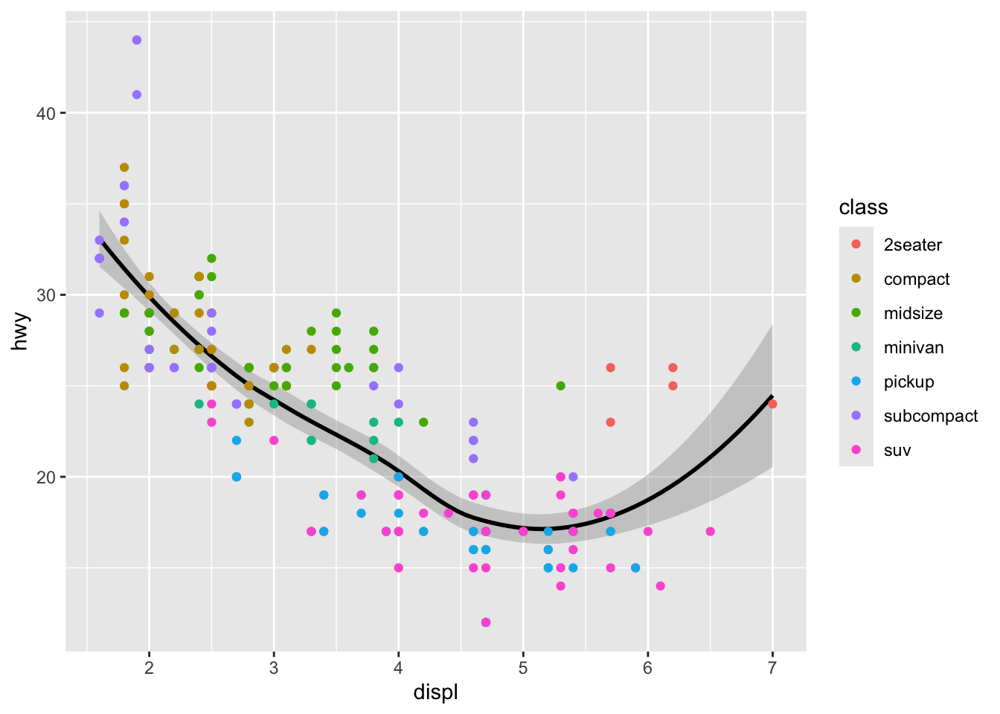
2.9 Different data for different layers…
You can use the same idea to specify different data for each layer.
Here, our smooth line displays just a subset of the mpg dataset, the subcompact cars.
The local data argument in geom_smooth() overrides the global data argument in ggplot() for that layer only.
Notes:
The standard colours in ggplot can be found here, the lilac colur for subcompact cars has been manually selected for the line so it matches the point colours used for it.
The se=FALSE argument removes the confidence interval around the smooth line. Assuming that is a confidence interval.
ggplot(data = mpg, mapping = aes(x = displ, y = hwy)) +
geom_point(mapping = aes(color = class)) +
geom_smooth(data = filter(mpg, class == "subcompact"), colour="#C77CFF", se = FALSE)
## `geom_smooth()` using method = 'loess' and formula = 'y ~ x'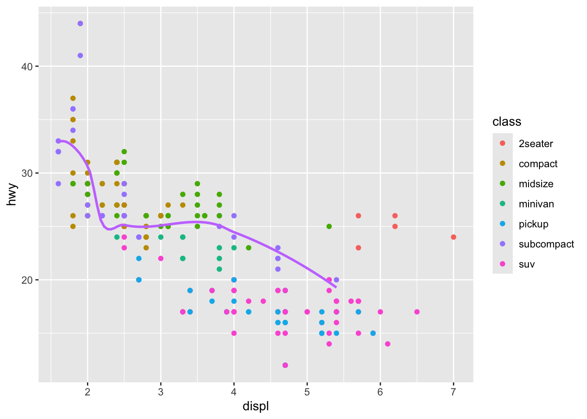
2.10 The group aesthetic
Many geoms, like geom_smooth(), use a single geometric object to display multiple rows of data. For these geoms, you can set the group aesthetic to a categorical variable to draw multiple objects. ggplot2 will draw a separate object for each unique value of the grouping variable.
In practice, ggplot2 will automatically group the data for these geoms whenever you map an aesthetic to a discrete variable (as in the linetype example). It is convenient to rely on this feature because the group aesthetic by itself does not add a legend or distinguishing features to the geoms.
You can also add the show.legend = FALSE subcommand if needed to suppress the legend.
ggplot(data = mpg) +
geom_smooth(mapping = aes(x = displ, y = hwy, group = drv))
## `geom_smooth()` using method = 'loess' and formula = 'y ~ x'
2.10.0.1 Plots with and without legend
ggarrange(
ggplot(data = mpg) + geom_smooth(mapping = aes(x = displ, y = hwy, color = drv),
show.legend = FALSE),
ggplot(data = mpg) + geom_smooth(mapping = aes(x = displ, y = hwy, color = drv))
)`geom_smooth()` using method = 'loess' and formula = 'y ~ x'
`geom_smooth()` using method = 'loess' and formula = 'y ~ x'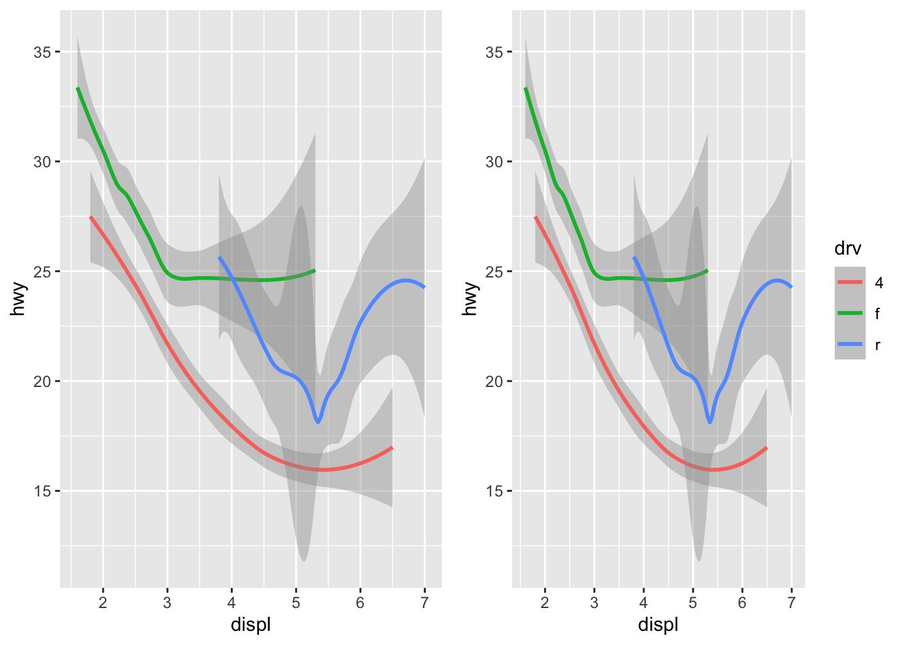
2.11 Colour palettes
You can manually define colour palettes and feed them to the scale_colour_manual argument.
manual_colour_palette <- c("palevioletred4", "seagreen3", "royalblue1")
ggplot(data = mpg, mapping = aes(x = displ, y = hwy, colour = drv)) +
geom_point() +
scale_color_manual(values = manual_colour_palette)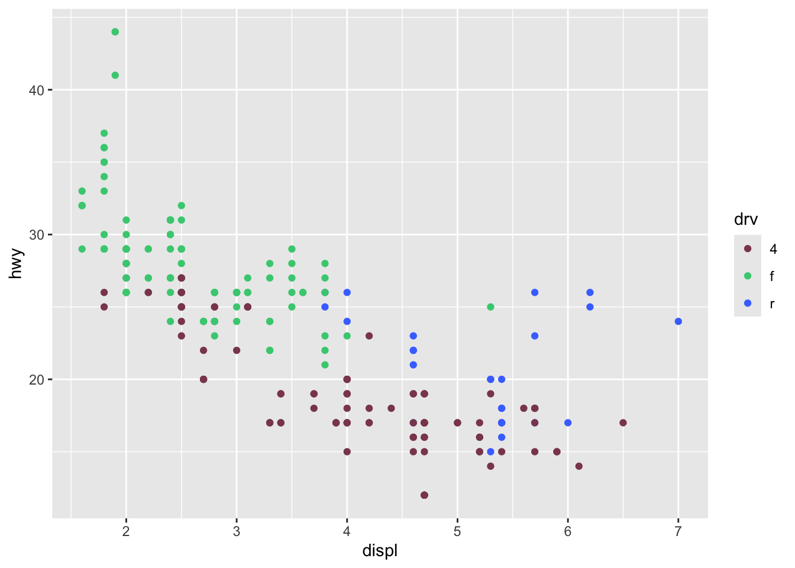
Or use predefined palettes from various packages, such RColorBrewer.
library(RColorBrewer)
#https://r-graph-gallery.com/38-rcolorbrewers-palettes.html
ggplot(data = mpg, mapping = aes(x = displ, y = hwy, colour = drv)) +
geom_point() +
scale_color_brewer(palette = "Set2") 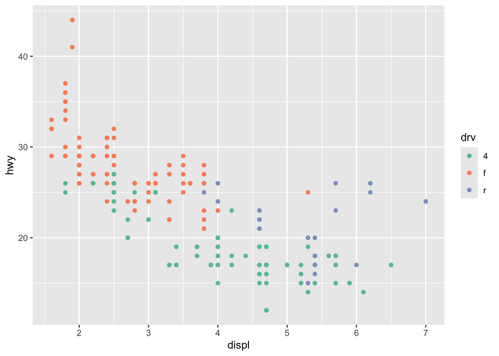
2.12 Label wrapping
In the below the margin is a space left around the plot (as a proportion of the plot width) to ensure labels do not run edge to edge. You can adjust this margin based on your layout needs.
char_width: is an estimate of the average width of a character. Adjust this based on your specific font and size.
For “sans” at font size 11 try 0.08 inches, I have left it as 0.1 as below to be generous. Size 12 apparently would only be 0.083333 inches.
# Example taken from chat GPT.
library(stringr)
# Function to dynamically calculate wrap width based on plot dimensions
dynamic_str_wrap <- function(text, plot_width = 7, num_labels = 1, char_width = 0.1, margin = 0.1) {
# plot_width: The width of the plot in inches
# num_labels: The number of labels on the axis
# char_width: Estimated average width of a character in inches
# margin: The proportion of total plot width to be left as margin
# Calculate the available width per label, accounting for margins
max_label_width <- (plot_width * (1 - margin)) / num_labels
# Calculate the maximum number of characters per line
max_chars <- max_label_width / char_width
# Wrap the text
str_wrap(text, width = floor(max_chars))
}
# Sample data
df <- data.frame(
x = c("A very long label that should be wrapped appropriately based on plot width",
"Short label", "Yet another label that is quite long and requires wrapping",
"Another long label that might also need wrapping to fit properly"),
y = c(2, 1, 4, 3)
)
df x y
1 A very long label that should be wrapped appropriately based on plot width 2
2 Short label 1
3 Yet another label that is quite long and requires wrapping 4
4 Another long label that might also need wrapping to fit properly 3# Calculate the number of labels (x-axis categories)
num_labels <- nrow(df)
# Apply dynamic wrapping to labels
df$x_wrapped <- sapply(df$x, dynamic_str_wrap, plot_width = 7, num_labels = num_labels, char_width = 0.1, margin = 0.1)
df x y
1 A very long label that should be wrapped appropriately based on plot width 2
2 Short label 1
3 Yet another label that is quite long and requires wrapping 4
4 Another long label that might also need wrapping to fit properly 3
x_wrapped
1 A very long\nlabel that\nshould be\nwrapped\nappropriately\nbased on plot\nwidth
2 Short label
3 Yet another\nlabel that\nis quite long\nand requires\nwrapping
4 Another long\nlabel that\nmight also need\nwrapping to fit\nproperly# Plot with wrapped x-axis labels (kept horizontal)
ggplot(df, aes(x = x_wrapped, y = y)) +
geom_bar(stat = "identity") +
theme(axis.text.x = element_text(angle = 0, hjust = 0.5, vjust = 0.5, size = 11))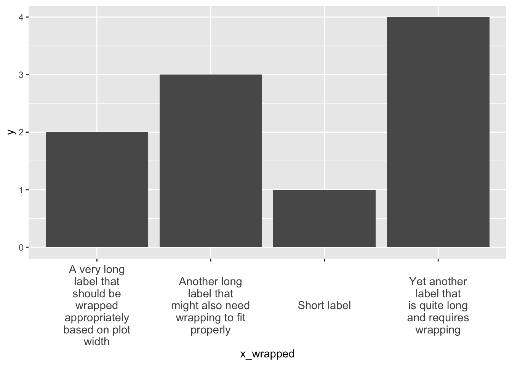
Adjusting the code above to work within a mutate framework.
df %>%
mutate(x_wrapped = map_chr(x, dynamic_str_wrap, plot_width = 7, num_labels = num_labels, char_width = 0.08, margin = 0.1)) %>%
ggplot(aes(x = x_wrapped, y = y)) +
geom_bar(stat = "identity") +
theme(axis.text.x = element_text(angle = 0, hjust = 0.5, vjust = 0.5, size = 11))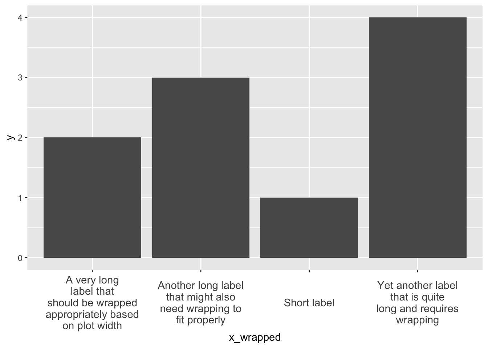
2.12.1 If we have a factor variable we can amend to:
# Add factor to data frame
df <- data.frame(
x = factor(c("A very long label that should be wrapped appropriately based on plot width",
"Short label", "Yet another label that is quite long and requires wrapping",
"Another long label that might also need wrapping to fit properly")),
y = c(2, 1, 4, 3)
)
df <- df %>%
mutate(x_wrapped = map_chr(as.character(x), dynamic_str_wrap, plot_width = 7, num_labels = num_labels, char_width = 0.08, margin = 0.1))
# Unique does return the items in order....
# Even when convert to character as with x_wrapped
# Hence below it enforces current order on new variable.
unique(df$x)[1] A very long label that should be wrapped appropriately based on plot width
[2] Short label
[3] Yet another label that is quite long and requires wrapping
[4] Another long label that might also need wrapping to fit properly
4 Levels: A very long label that should be wrapped appropriately based on plot width ...unique(df$x_wrapped)[1] "A very long\nlabel that\nshould be wrapped\nappropriately based\non plot width"
[2] "Short label"
[3] "Yet another label\nthat is quite\nlong and requires\nwrapping"
[4] "Another long label\nthat might also\nneed wrapping to\nfit properly" # Convert wrapped labels back to factors if needed
df <- df %>%
mutate(x_wrapped = factor(x_wrapped, levels = unique(x_wrapped)))
# Plot with wrapped x-axis labels (kept horizontal)
ggplot(df, aes(x = x_wrapped, y = y)) +
geom_bar(stat = "identity") +
theme(axis.text.x = element_text(angle = 0, hjust = 0.5, vjust = 0.5, size = 11))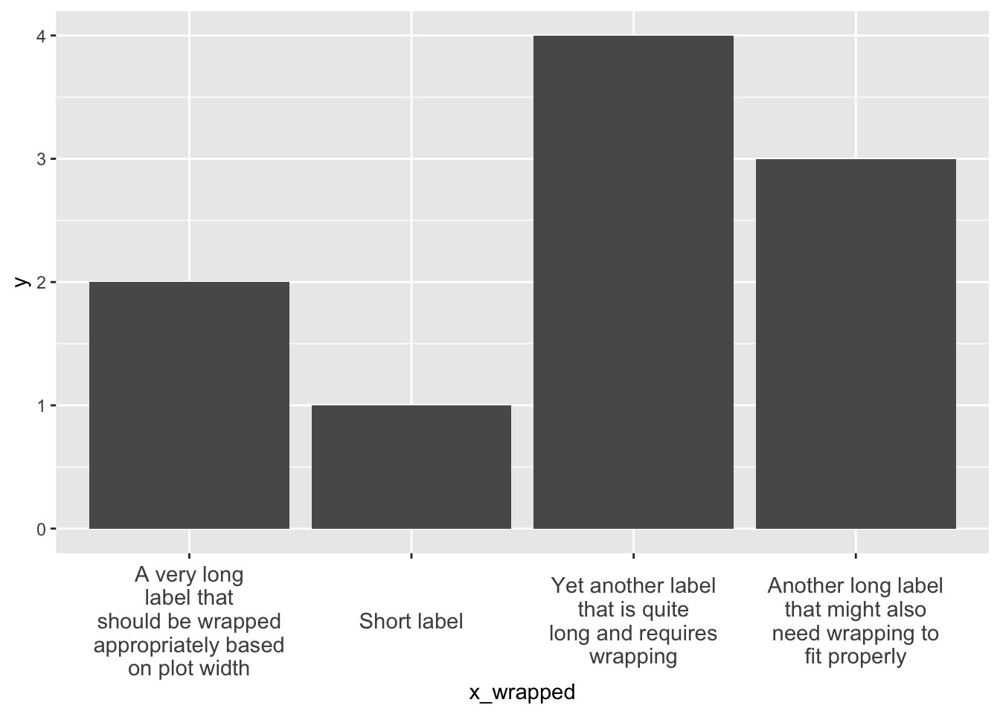
2.13 element_text()
element_ _text() modifies label and headings.
You can control the font family, face, colour, size (in points), hjust, vjust, angle (in degrees) and lineheight (as ratio of fontcase). More details on the parameters can be found in vignette(“ggplot2-specs”).
text_amend <-
ggplot(data = mpg, mapping = aes(x = displ, y = hwy, colour = drv)) +
geom_point() +
scale_color_brewer(palette = "Set2") +
labs(title = "Highway miles per gallon by engine displacement") +
theme(plot.title = element_text(size = 12, face = "bold", colour = "red"))
# Edits also stack, or overwrite if previously specified
text_amend2 <- text_amend + theme(plot.title = element_text(hjust = 1, colour = "black"))
ggarrange(text_amend, text_amend2,
nrow = 2)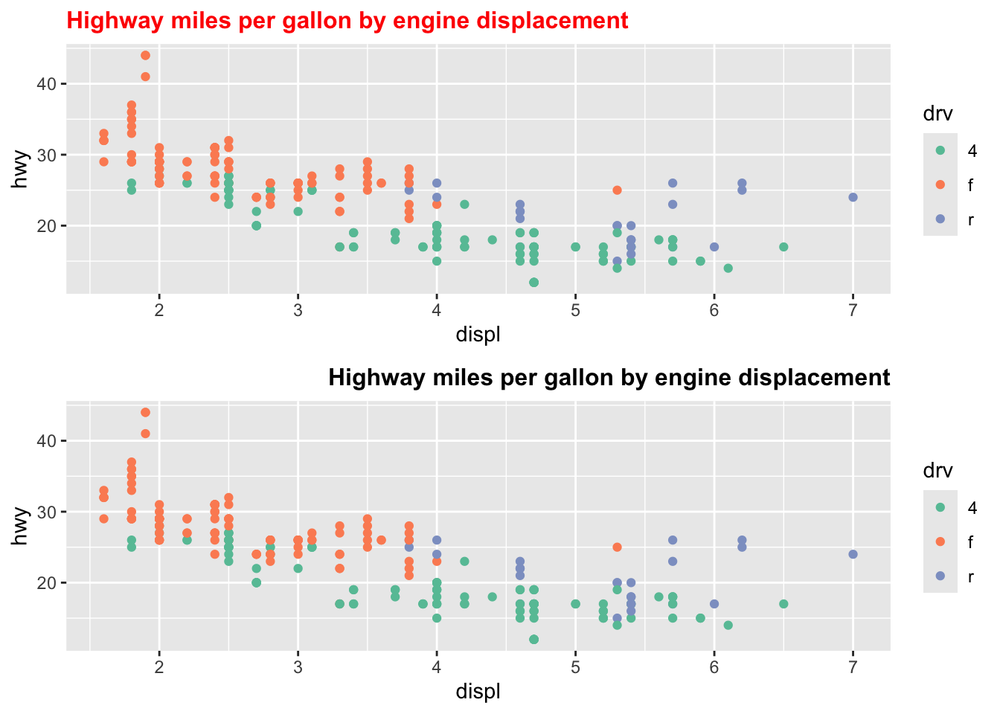
You can also control the margins around text with margin(). The amount of sapce in points around the top, right, bottom and left sides of the text. Elements not specified equal zero.
There does not seem to be a uniform default for the margins.
ggarrange(text_amend + theme(plot.title = element_text(margin = margin())),
text_amend2 + theme(plot.title = element_text(margin = margin(t = 10, b = 10))),
nrow = 2)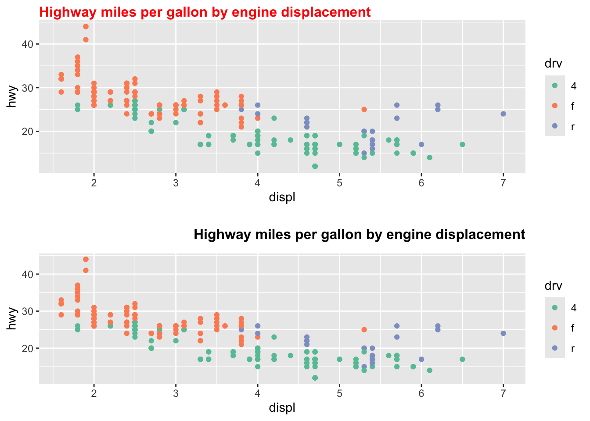
With all axis headings specified.
text_amend <-
ggplot(data = mpg, mapping = aes(x = displ, y = hwy, colour = drv)) +
geom_point() +
scale_color_brewer(palette = "Set2") +
labs(title = "Highway miles per gallon by engine displacement",
x = "Engine displacement",
y = "Miles per gallon") +
theme(plot.title = element_text(size = 12, face = "bold"),
axis.title = element_text(size = 11, face = "bold"),
axis.title.y = element_text(vjust = 2),
axis.text = element_text(size = 11))
text_amend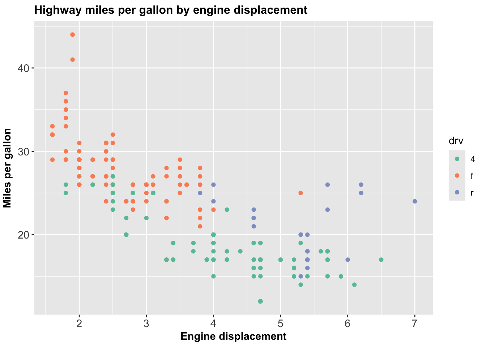
2.14 Theme elements
For this the modifying theme components section of the ggplot2 book.
There are around 40 unique elements that control the appearance of the plot. They can be roughly grouped into five categories: plot, axis, legend, panel and facet. The following sections describe each in turn.
2.14.1 Plot
- plot.background - set by element_rect()
- plot.title - set by element_text()
- plot.margin - set by margin()
Of these I am quite happy with plot.background, and plot.title is covered above under text editing.
The plot.margin is by standard set to 5.5pt on all sides, for e.g. see theme_grey.
theme_grey()$plot.marginNULLSome example edits below, but perhaps 5.5 is ok too. It may be best to minimise to maximise plot space.
ggarrange(
text_amend + theme(plot.margin = margin(2, 2, 2, 2)),
text_amend + theme(plot.margin = margin(10, 10, 10, 10)),
nrow = 2)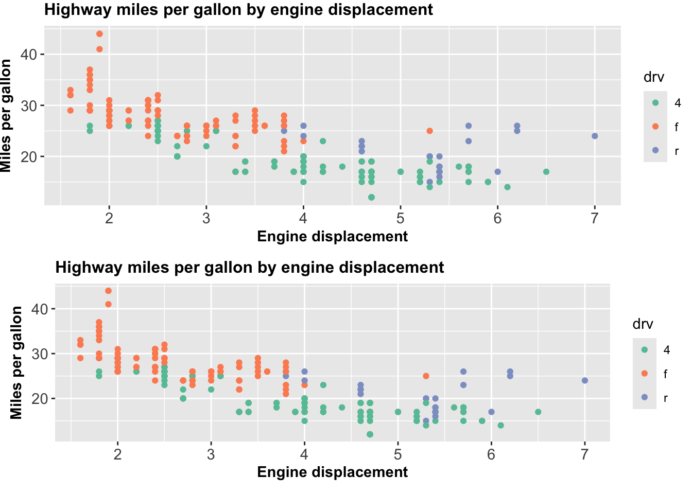
2.14.2 Axis elements
There are several axis elements that can be controlled. Of these I am going to be most interested in:
- axis.title, axis.title.x and axis.title.y - controlled by element_text().
Again I have covered these under text edits.
Maybe of interest is the angle of labels. The most common adjustment is to rotate the x-axis labels to avoid long overlapping labels. If you do this, note negative angles tend to look best and you should set hjust = 0 and vjust = 1:
df <- data.frame(
x = c("label", "a long label", "an even longer label"),
y = 1:3
)
base <- ggplot(df, aes(x, y)) + geom_point()
base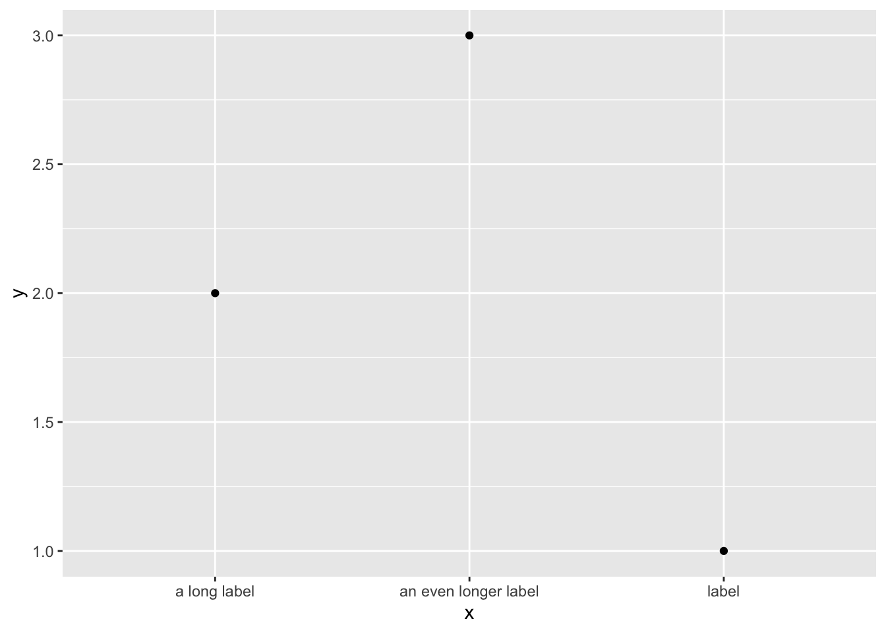
base +
theme(axis.text.x = element_text(angle = -30, vjust = 1, hjust = 0)) +
xlab("axis label x") +
ylab("axis label y")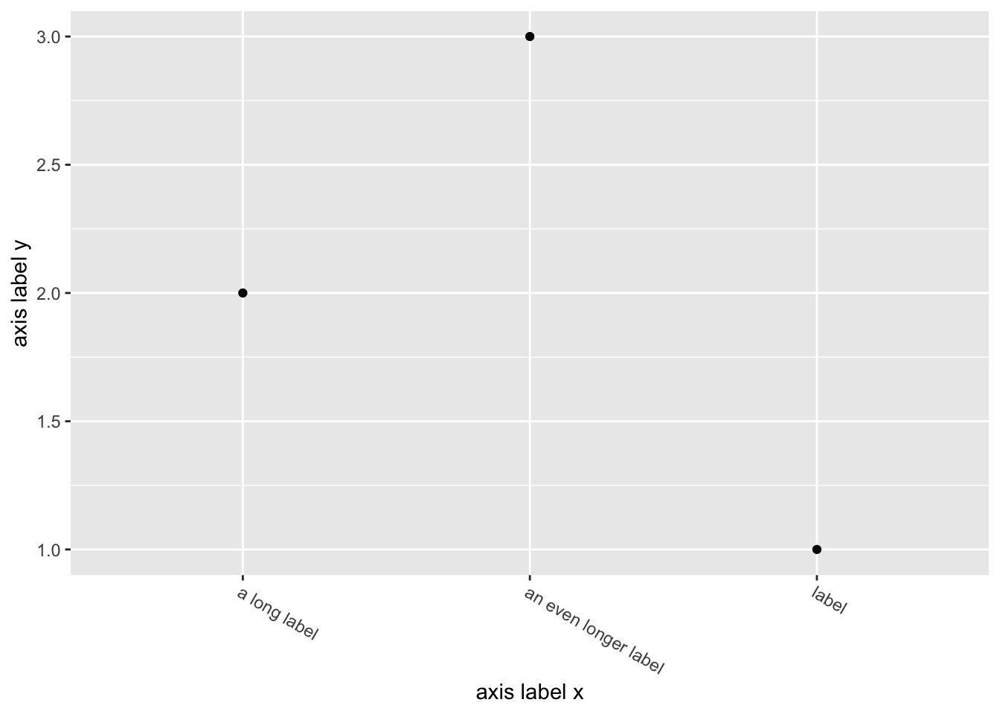
Note that margins set on axis text seem to apply only to axis.text, not axis.title. this may be a bug.
base +
theme(
axis.title = element_text(margin = margin(t = 100)),
axis.text.x = element_text(margin = margin(b = 10)),
axis.text.y = element_text(margin = margin(l = 10)))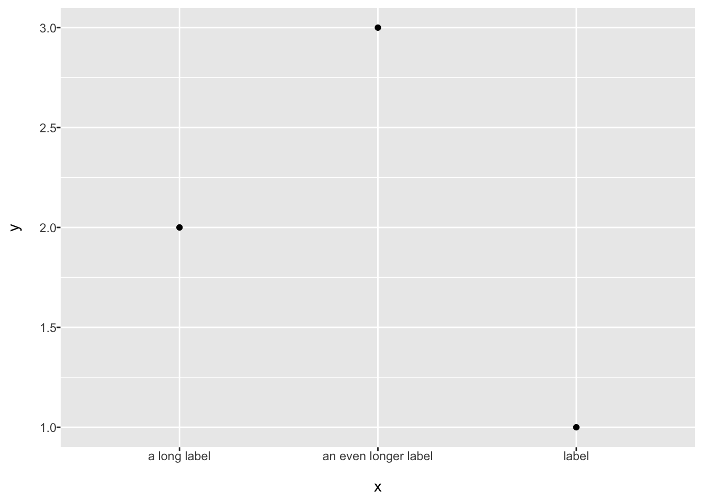
2.14.3 Legends
The legend elements control the appearance of all legends. You can also modify the appearance of individual legends by modifying the same elements in guide_legend() or guide_colourbar().
This first set of example relate to legend size, background and text.
df <- data.frame(x = 1:4, y = 1:4, z = rep(c("a", "b"), each = 2))
base <- ggplot(df, aes(x, y, colour = z)) + geom_point()
ggarrange(
base + theme(
legend.background = element_rect(
fill = "lemonchiffon",
colour = "grey50",
linewidth = 1)),
base + theme(
legend.key = element_rect(color = "grey50"),
legend.key.width = unit(0.5, "cm"),
legend.key.height = unit(0.75, "cm")),
base + theme(
legend.text = element_text(size = 15),
legend.title = element_text(size = 15, face = "bold"),
legend.key.size = unit(0.25, "cm"),
legend.margin = unit(0.1, "cm")), # If set to zero removes margins entirely.
ncol= 3)Warning: `legend.margin` must be specified using `margin()`
ℹ For the old behavior use `legend.spacing`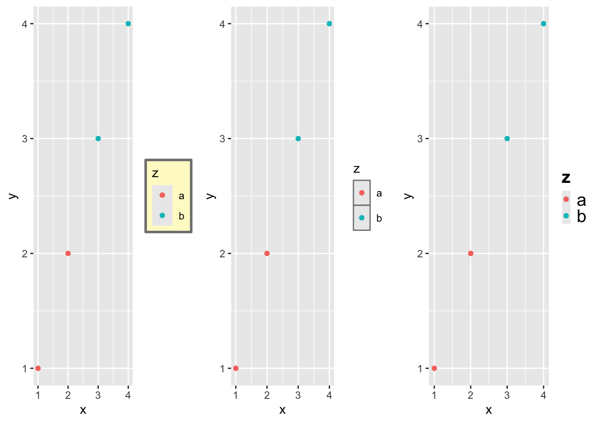
This second set relate to legend position, direction, justification and the surrounding box.
plot <- ggplot(data = mpg, mapping = aes(x = displ, y = hwy, colour = drv)) +
geom_point() +
scale_color_brewer(palette = "Set2")
ggarrange(
plot + theme(legend.position = "left"),
plot + theme(legend.position = "right"), # the default
plot + theme(legend.position = "bottom", legend.box.just = "left"),
plot + theme(legend.position = "none"),
ncol = 2, nrow = 2)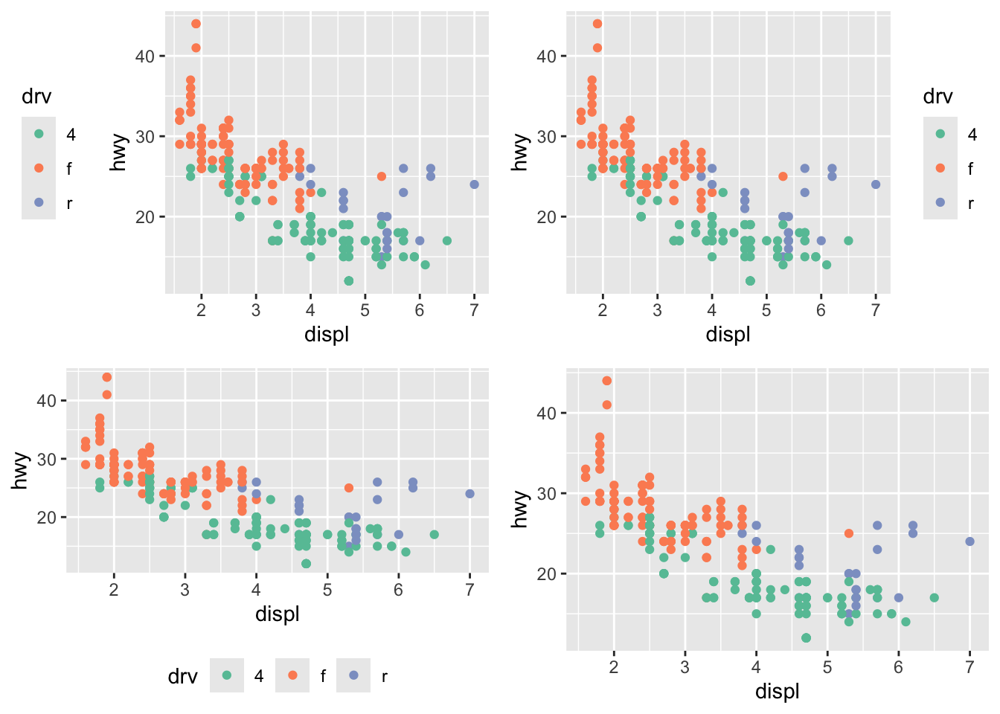
2.14.4 Panel elements
This is things like the panel grid, the panel border and the aspect ratio. By and large I will ignore these.
2.14.5 Facets
This can cotnrol the background of the panel strips,the strip text, and the panel spacing.
The default spacing between panels in faceted plot is 5.5pts.
Units: The spacing is set using the unit() function from the grid package. Common units include points (“pt”), millimeters (“mm”), and inches (“in”).
- 1 point (pt) is equal to 1/72 of an inch.
- Therefore, 1 inch is equal to 72 points.
df <- data.frame(x = 1:4, y = 1:4, z = c("a", "a", "b", "b"))
base_f <- ggplot(df, aes(x, y)) + geom_point() + facet_wrap(~z)
base_f2 <- base_f + theme(panel.spacing = unit(0.5, "in"))
base_f3 <- base_f + theme(
strip.text = element_text(colour = "white"),
strip.background = element_rect(
fill = "grey20",
color = "grey80",
linewidth = 1
)
)
ggarrange(base_f, base_f2, base_f3, nrow = 1)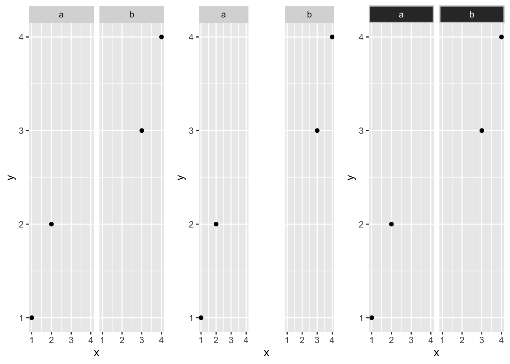